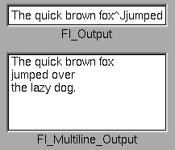

Class Hierarchy
Fl_Input
|
+----Fl_Output
|
+----Fl_Multiline_Output
Include Files
#include <FL/Fl_Output.H>
Description
This widget displays a piece of text. When you set the value()
, Fl_Output does a strcpy() to it's own storage,
which is useful for program-generated values. The user may select
portions of the text using the mouse and paste the contents into other
fields or programs.

There is a single subclass,
Fl_Multiline_Output, which allows you to display multiple lines of
text.
The text may contain any characters except \0, and will correctly
display anything, using ^X notation for unprintable control characters
and \nnn notation for unprintable characters with the high bit set. It
assumes the font can draw any characters in the ISO-Latin1 character
set.
Methods
Creates a new Fl_Output widget using the given position,
size, and label string. The default boxtype is FL_DOWN_BOX.
Destroys the widget and any value associated with it.
The first form returns the current value, which is a pointer to the
internal buffer and is valid only until the value is changed.
The second two forms change the text and set the mark and the point
to the end of it. The string is copied to the internal buffer. Passing
NULL is the same as "". This returns non-zero if the new value is
different than the current one. You can use the second version to
directly set the length if you know it already or want to put nul's in
the text.
Returns the number of characters in value(). This may be
greater than strlen(value()) if there are nul characters in
it.
Same as value()[n], but may be faster in plausible
implementations. No bounds checking is done.
Gets or sets the color of the text in the input field.
Gets or sets the font of the text in the input field.
Gets or sets the size of the text in the input field.